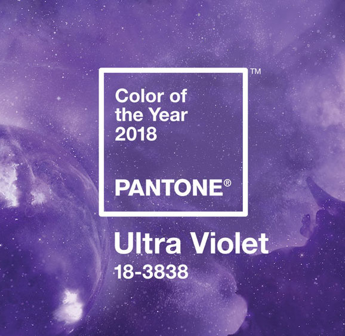
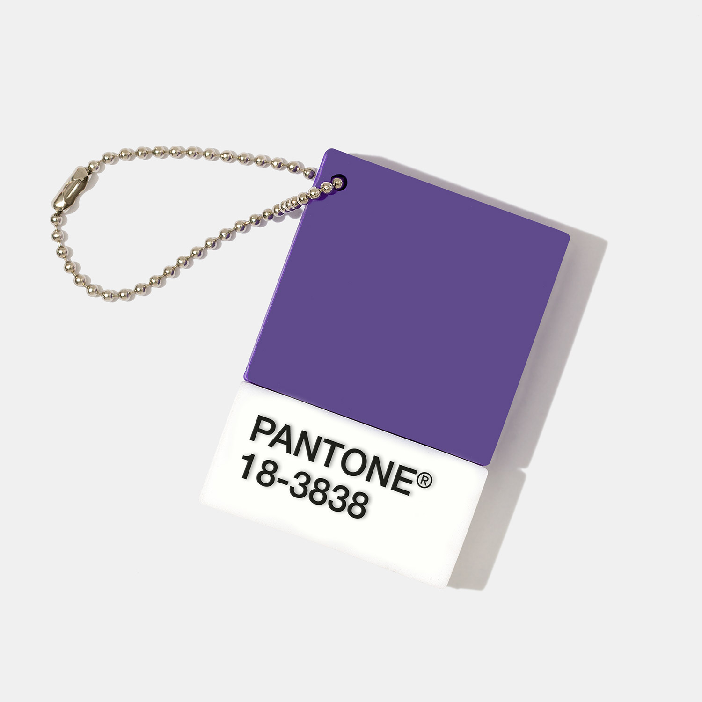
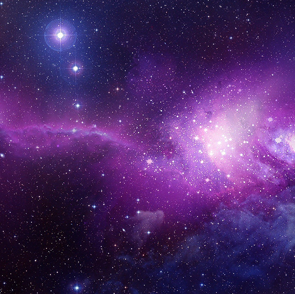

What is Ultra Violet?
“A dramatically provocative and thoughtful purple shade...communicates originality, ingenuity, and visionary thinking that points us toward the future.”
PANTONE 18-3838 Color values: RGB95 75 139 HEX/HTML5F4B8B

Why Ultra Violet?
How does this represent 2018?
Ultra Violet is a blue-based purple that is both innovative and imaginative. It allows us to see look beyond to the future, as it is reminiscent of technology and the galaxies. According to Pantone, it “lights the way to what is yet to come”.

My Thoughts
Purple...Finally!
I love Ultra Violet. I think purple in general is a highly undervalued and underused color, so I was happy to see Ultra Violet getting some recognition! While it does have a very space and galaxy-like feeling, purple is also traditionally meant to symbolize royalty and wealth. I find this contrast between past and present very fascinating.